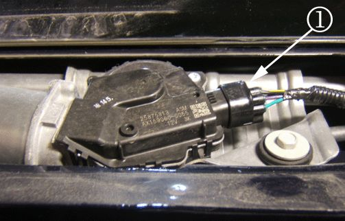
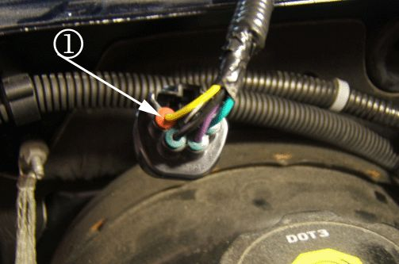
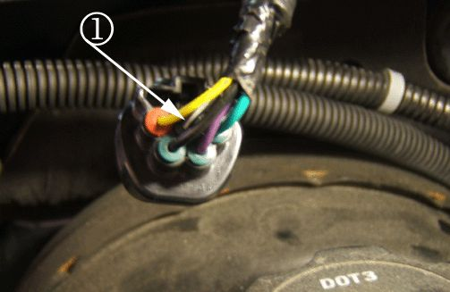
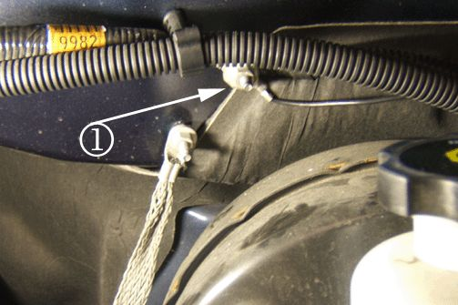
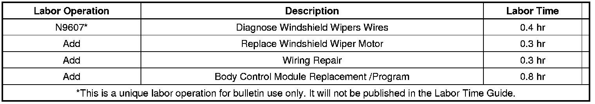

Electrical - Various Electrical Malfunction/Systems Inop
TECHNICALBulletin No.: 09-08-43-001
Date: March 25, 2009
Subject:
Wipers Do Not Park in Correct Location, Various Electrical Concerns: Door Locks/Windows Inoperative, Radio Stays on After Driver's Door Opened, Telltales Illuminated (Diagnose Wiper Wiring, Relocate Ground Wire)
Models:
2007-2009 Cadillac Escalade Models
2007-2009 Chevrolet Avalanche, Silverado, Suburban, Tahoe
2007-2009 GMC Sierra, Yukon, Yukon Denali, Yukon XL, Yukon Denali XL
Condition
Some customers may comment that the windshield wipers do not park in the correct location. In addition to this wiper concern, customers may also comment on any of the following conditions:
- High/low headlamp beam selection switch, power door locks and/or power windows are inoperative.
- Radio stays on after the driver's door has been opened.
- Dome lamps remain on at all times.
- Door Ajar message displays in the Driver Information Center (DIC).
- Tow haul telltale lamp is either always illuminated or does not turn on.
- Headlamps do not turn on or off when requested by the manual headlamp switch.
Correction
Note
DO NOT replace the windshield wiper motor for this concern unless instructed to by the diagnostics.
Wipers Do Not Park Circuit/System Testing
1. Access the wiper motor located under the cowl cover. Refer to Air Inlet Grille Panel Replacement procedure in SI.

2. With the ignition OFF, disconnect the harness connector at the windshield wiper motor (1).
3. Turn the ignition ON. Verify that the scan tool BCM Wiper Park Switch parameter is Inactive.

- If not Inactive, test the signal circuit terminal 3 (1) for a short to ground. If the circuit tests normal, proceed to Wiring Repair below. If the circuit does not test normal, fix the short to ground.
4. Install a 3-amp fused jumper wire between the signal circuit terminal 3 (1) and ground. Verify that the scan tool Wiper Park Switch parameter is Active.
- If not an active value, test the signal circuit for an open/high resistance. If the circuit tests normal, proceed to Wiring Repair below. If the circuit does not test normal, fix the open wire.
5. If all circuits test normal, replace the windshield wiper motor and do NOT perform the following repair. Do not proceed on with this bulletin.
Wiring Repair - To correct this concern relocate the wiper motor park switch ground circuit as follows:
Important
Do Not replace the wiper motor at this time.
1. Disconnect the wiper motor connector and remove any tape/conduit 75-100 mm (3-4 in) from the connector end.

2. Locate and cut circuit 1851 (pin 2 Black/White wire) approximately 50 mm (2 in) from the wiper motor connector.
3. Using 18 gauge (0.8 metric) Black wire, route the new park switch ground circuit through the front of dash grommet (1).
4. Using a Salmon Duraseal splice sleeve, refer to Splicing Copper Wire Using Splice Sleeves in SI. Splice the new wire onto circuit 1851 terminal 2 that is still attached to the wiper motor connector. Use electrical tape to tape and secure the other cut end of circuit 1851 into the wiper motor harness.
5. Attach the new park switch ground circuit along side the wiper motor harness using zip ties or electrical tape, up to the front of dash grommet.
6. Cut the other end of the new park switch ground circuit long enough to reach the new ground location shown below.

7. Install the appropriate size ring terminal to the wire and attach to the ground stud (2) using the existing nut.
8. Reinstall the cowl cover following the Air Inlet Grille Panel Replacement procedure in SI.
9. Verify wiper motor operation. If the concern is still present, proceed to BCM-Replace below.
BCM-Replace
Replace the BCM and program if the concern is still not repaired. Refer to Body Control Module Replacement and program in SI.
Warranty Information

For vehicles repaired under warranty, use the table above.

Disclaimer